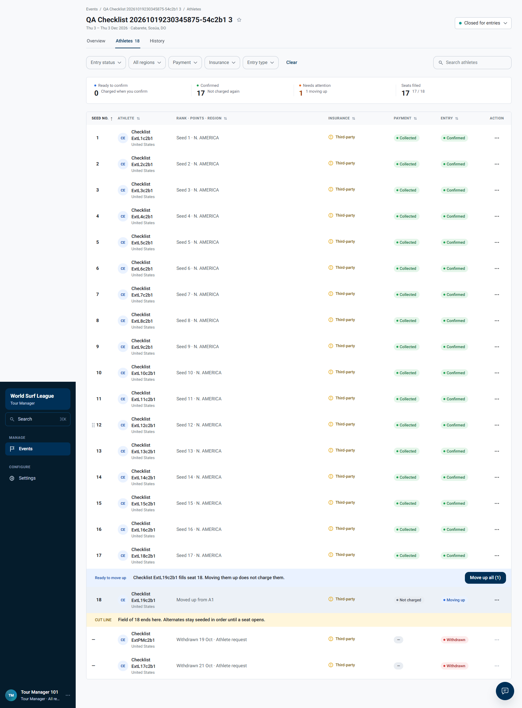
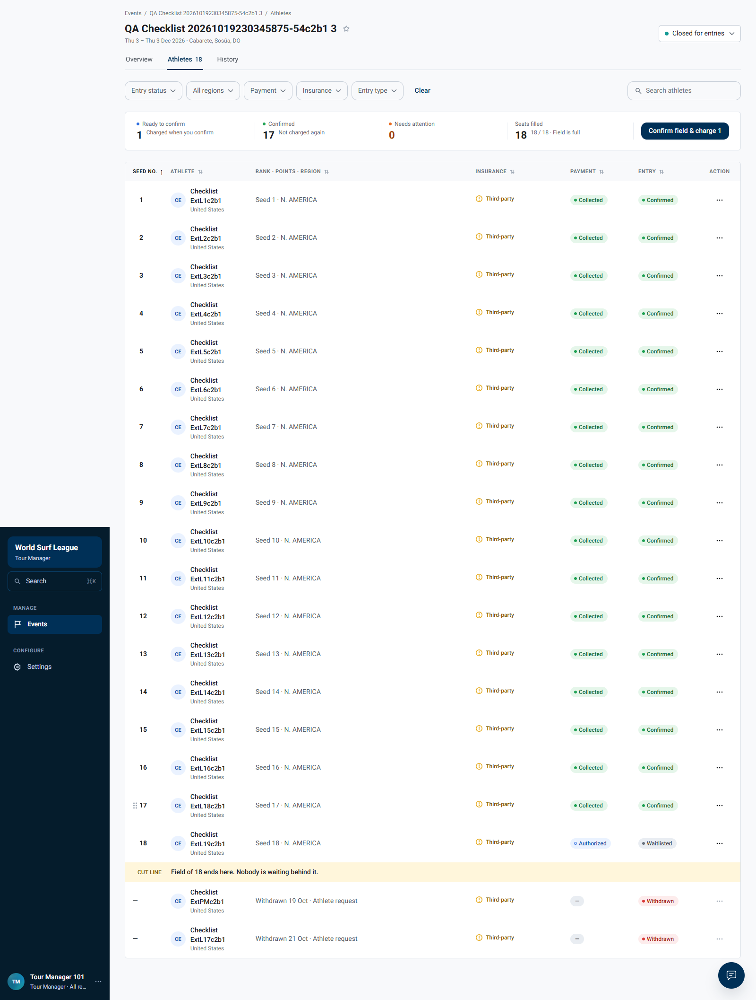
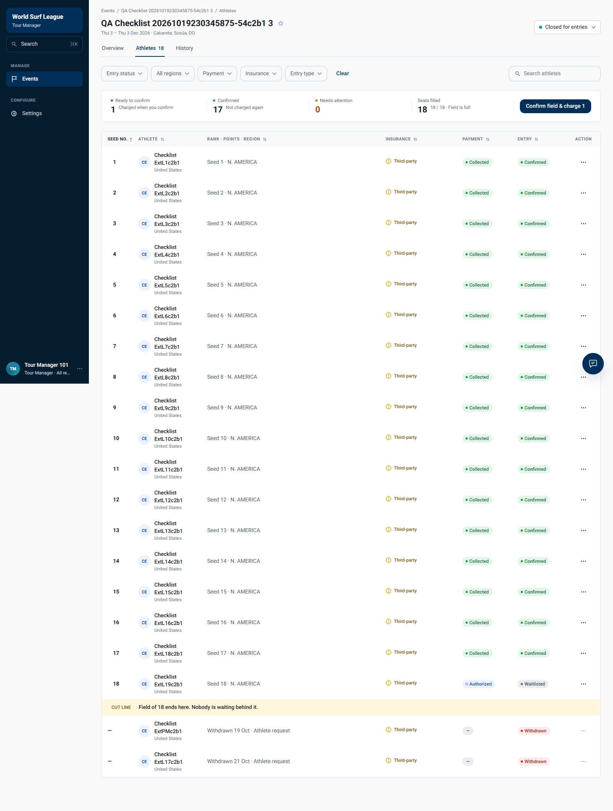
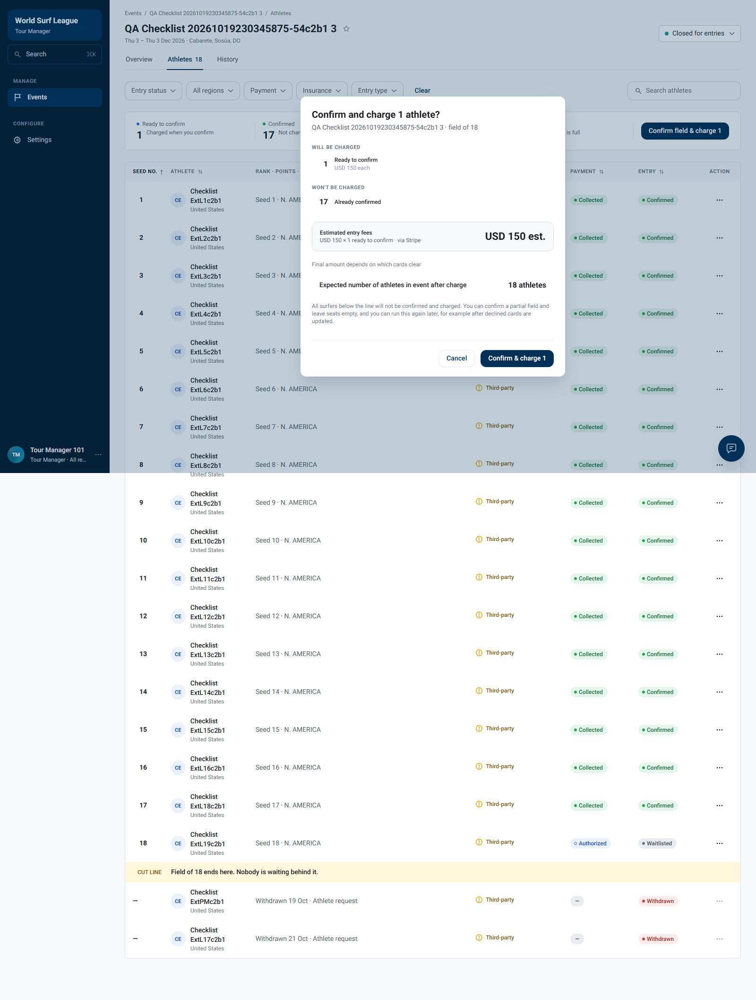
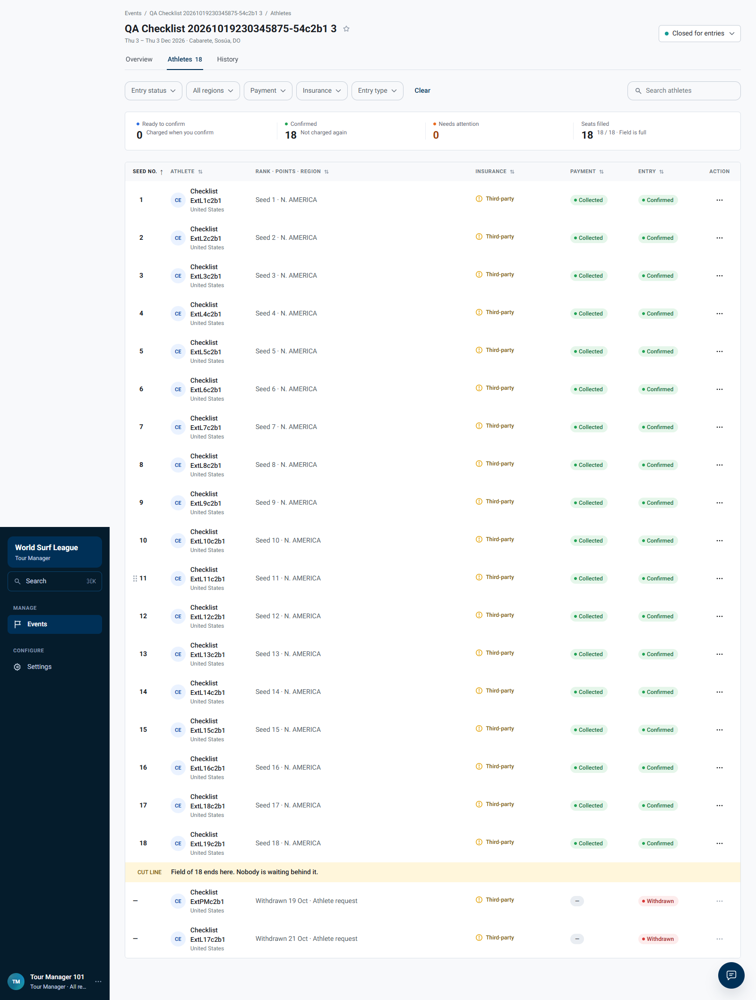

Flow

21 October 2026 - Tour Manager - original QA fixture
| Original issue | Current result |
|---|---|
| No way to charge a moved-up alternate | Not reproduced: actual UI charge succeeded. |
| No Move up control | Not reproduced for promotion: Move up all (1) works. |
| Undo unavailable in UI | No Undo button found in inspected state; API Undo passed. |
Only the new alternate was charged. The API skipped all 17 already charged entries.
Real clicks: Move up all (1), Confirm field & charge 1, then Confirm & charge 1.





# Tour Manager alternate promotion and charging - dev rerun
Executed 21 October 2026, 21:09:18-21:11:31 Cairo (raw evidence UTC).
## Outcome
- BUG-280c0e6389716e7b - missing charge action: NOT REPRODUCED. The live UI offered Confirm field & charge 1 after the event had already been charged. Clicking it opened a preview and the final Confirm & charge 1 submitted POST /charge: HTTP 200, charged=1, skipped=17 (already_charged). The promoted alternate became Confirmed / Collected.
- BUG-ce663cca09a8e761 - missing Move up control: promotion portion NOT REPRODUCED. Move up all (1) was visible for the ready alternate and clicking it moved the athlete into field seat 18. No Undo button was found immediately after promotion in the inspected UI. The API Undo worked before charge, so this portion remains an observed UI gap needing product review. This does not establish every possible undo affordance is absent.
## Exact fixture
Reused the original isolated QA extension event; did not create a new full roster or re-run the original first Confirm & charge.
- Event 01a1566a-e21c-71f6-ab88-e0f84251d501: QA Checklist 20261019230345875-54c2b1 3, 3 December 2026, Cabarete, field size 18, closed for entries.
- Alternate 01a15672-96f4-7560-a7fa-af424786d8cc: Checklist ExtL19c2b1, initially A1 / Waitlisted / Not charged.
- Withdrawn fixture 01a15672-90b2-7069-a91b-14198697908e: Checklist ExtL17c2b1, initially Pending / Declined. Only this declined QA entry was withdrawn; no collected entry was refunded.
- Initial stage charged; current primaryAction {"code":"confirm","label":"Confirm field & charge 1"}. This differs from historical primaryAction=null.
## Reproduction steps and actual results
1. Sign in as Tour Manager and open the original event, Athletes tab. Confirm existing field and alternate; the current BFF already returns a confirm action on stage=charged.
2. Withdraw the declined QA field entry through POST /entries/{id}/actions, code=withdraw, reason=athlete-request. HTTP 200. Reload the UI. The alternate is Moving up and Move up all (1) appears.
3. First capture: exercise POST /alternates/move-up, POST /alternates/move-up/undo, and move-up again with current versions. All HTTP 200. Promotion gives field seat 18 / Waitlisted / Authorized; undo restores alternate group. These are API actions, not UI clicks.
4. Restore the ready-alternate state once more using API undo to prepare an actual UI recording.
5. Second capture: click Move up all (1) in the real UI. No promotion confirmation dialog was shown. Readback changes the athlete from alternate to field seat 18, with movedUpFrom=1. No role=button matching Undo was found in this immediate state (undoButtons=[]).
6. Open Confirm field & charge 1. Preview shows one ready athlete, 17 already confirmed, estimated USD 150. The dialog explicitly says the operation can be run again later. Click Confirm & charge 1 in the dialog.
7. Captured UI POST /charge returned HTTP 200, confirmationId=01a15fa9-3274-70aa-91aa-4d12fc7cbbb7, charged=1. All 17 skipped rows have reason=already_charged. This is application-level protection evidence, not an independent Stripe ledger audit.
8. Poll seed-list API until Collected, then refresh UI. Alternate is field seat 18 / Confirmed / Collected. Entry history contains Card payment succeeded. The final screenshot is after refresh; automatic roster refresh is not certified.
## Expected behavior and remaining decision
A manager should be able to fill an open seat and charge only the newly eligible athlete without charging confirmed athletes again. Both actions are reachable in the current live UI. Whether and where Undo must be exposed, whether promotion needs confirmation, and the original Q5 product decision still require product agreement. No requirement approval is inferred from the current implementation.
## Technical evidence
- BFF base: /tour-manager/events/01a1566a-e21c-71f6-ab88-e0f84251d501.
- GET /entries: initial, ready, promoted, undone and final full payloads retained in results.json / ui-results.json.
- POST /alternates/move-up and /alternates/move-up/undo: versioned API positive controls returned HTTP 200.
- UI-triggered POST /charge: raw response and UTC timestamp retained in ui-results.json.
- Final entry: {"id":"01a15672-96f4-7560-a7fa-af424786d8cc","group":"field","athlete":{"initials":"CE","name":"Checklist ExtL19c2b1","country":"United States"},"ranking":"Seed 18 · N. AMERICA","region":"north_america","highlight":null,"insurance":{"state":"warn","label":"Third-party","code":"third-party"},"entryType":{"code":"regular","label":"Regular"},"payment":{"code":"collected","label":"Collected","tone":"neutral"},"entry":{"code":"confirmed","label":"Confirmed","tone":"neutral"},"waivable":{"fee":false},"actions":[{"code":"message","label":"Send message","destructive":false},{"code":"withdraw","label":"Withdraw entry","destructive":true}],"movable":true,"pinned":false,"hasHistory":true,"seedRank":18,"alternatePosition":null,"moveUpSeat":null,"movedUpFrom":null}.
- Relevant history: [{"id":"01a15fa9-3af6-7187-a0e4-faa6add69498","when":"21 Oct 18:11 UTC","what":"Card payment succeeded","channel":"Stripe","by":"System"},{"id":"01a15fa9-3285-7274-b2c1-c6685de702af","when":"21 Oct 18:11 UTC","what":"Card payment charge started","channel":"Stripe","by":"T. Manager 101"},{"id":"01a15fa9-1367-7150-b58b-76d27ea207ff","when":"21 Oct 18:11 UTC","what":"Alternate promoted · to #18 · moved up from A1","channel":"Tour Manager","by":"T. Manager 101"},{"id":"01a15fa8-e8c6-71e1-ab50-4491741ec1c8","when":"21 Oct 18:11 UTC","what":"Back to the alternates · was #18 · move up undone","channel":"Tour Manager","by":"T. Manager 101"},{"id":"01a15fa7-aa2c-71a8-a9f5-2eb774d840f1","when":"21 Oct 18:09 UTC","what":"Alternate promoted · to #18 · moved up from A1","channel":"Tour Manager","by":"T. Manager 101"},{"id":"01a15fa7-99da-705b-9d48-37e5351b4358","when":"21 Oct 18:09 UTC","what":"Back to the alternates · was #18 · move up undone","channel":"Tour Manager","by":"T. Manager 101"},{"id":"01a15fa7-8a05-7504-9309-8f615e216245","when":"21 Oct 18:09 UTC","what":"Alternate promoted · to #18 · moved up from A1","channel":"Tour Manager","by":"T. Manager 101"},{"id":"01a15673-abb2-717b-ae5b-89949602fcb5","when":"19 Oct 23:16 UTC","what":"Seed · down from alternate 1 to alternate 2 · after a move up was undone","channel":"Tour Manager","by":"T. Manager 101"}].
## Recordings and screenshots
ui-flow.webm is the actual successful UI promotion and charge sequence. alternate-flow.webm is the earlier API-positive-control observation sequence; API calls are not shown as UI actions. Screenshots 09-15 document the successful UI rerun; screenshots 01-06 document the API-control setup.
## Test tooling correction and limits
The first runner waited for an obsolete review-acknowledgement checkbox. The current dialog has no such checkbox, so it timed out before submitting charge. results.json retains INCOMPLETE and the error screenshot. The second runner handled the actual dialog and completed. The initial timeout is a test-runner issue, not a product failure. The second runner captured chargePreview too early as Cancel; use screenshot 14 and the first error screenshot for loaded preview text.
Dev UI and API were exercised live. Application history reports payment success; this rerun did not independently inspect Stripe test-mode/livemode or provider charge records, send reminder emails, change rules, deploy code, or create Jira issues. The fixture was created by earlier Stripe test-card automation. No app code was modified. Historical extension findings remain historical evidence; this focused rerun should be read alongside them.
Successful UI run and response logs - API controls and initial runner diagnostic - Markdown report - Earlier API-control observation recording - Loaded charge dialog from initial runner timeout - Historical extension report